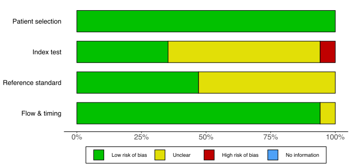
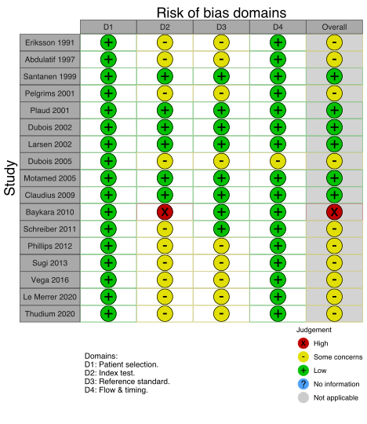

Last updated: 2022-04-18
Checks: 6 1
Knit directory: nmb/
This reproducible R Markdown analysis was created with workflowr (version 1.7.0). The Checks tab describes the reproducibility checks that were applied when the results were created. The Past versions tab lists the development history.
The R Markdown file has unstaged changes. To know which version of
the R Markdown file created these results, you’ll want to first commit
it to the Git repo. If you’re still working on the analysis, you can
ignore this warning. When you’re finished, you can run
wflow_publish to commit the R Markdown file and build the
HTML.
Great job! The global environment was empty. Objects defined in the global environment can affect the analysis in your R Markdown file in unknown ways. For reproduciblity it’s best to always run the code in an empty environment.
The command set.seed(20211025) was run prior to running
the code in the R Markdown file. Setting a seed ensures that any results
that rely on randomness, e.g. subsampling or permutations, are
reproducible.
Great job! Recording the operating system, R version, and package versions is critical for reproducibility.
Nice! There were no cached chunks for this analysis, so you can be confident that you successfully produced the results during this run.
Great job! Using relative paths to the files within your workflowr project makes it easier to run your code on other machines.
Great! You are using Git for version control. Tracking code development and connecting the code version to the results is critical for reproducibility.
The results in this page were generated with repository version 2c55f18. See the Past versions tab to see a history of the changes made to the R Markdown and HTML files.
Note that you need to be careful to ensure that all relevant files for
the analysis have been committed to Git prior to generating the results
(you can use wflow_publish or
wflow_git_commit). workflowr only checks the R Markdown
file, but you know if there are other scripts or data files that it
depends on. Below is the status of the Git repository when the results
were generated:
Ignored files:
Ignored: .DS_Store
Ignored: .Rhistory
Ignored: .Rproj.user/
Ignored: NMB-main_032922/
Ignored: _@@/
Ignored: analysis/.DS_Store
Ignored: analysis/confirm_sug_era/
Ignored: analysis/index (original).Rmd
Ignored: analysis/kq2 (original 2).Rmd
Ignored: analysis/reversal (original).Rmd
Ignored: analysis/scratch.Rmd
Ignored: analysis/tofr_confirm (modified).Rmd
Ignored: analysis/tofr_confirm (old).Rmd
Ignored: analysis/used_files_dates.txt
Ignored: code/helpers.R
Ignored: code/rob_111921 (original).R
Ignored: code/rob_summary.R
Ignored: code/rob_traffic_light.R
Ignored: code/rob_traffic_light_mg.R
Ignored: nmb_040322.RData
Ignored: used_files_dates.txt
Ignored: used_rob_files_dates.txt
Untracked files:
Untracked: .temp.lb
Untracked: analysis/.gitignore
Untracked: analysis/bib/kq1.bib
Untracked: analysis/bib/kq3.bib
Untracked: analysis/bib/kq3_confirm.bib
Untracked: analysis/riskofbias.Rmd
Untracked: code/.gitignore
Untracked: code/misc_calcs.R
Untracked: code/rob_111921.R
Untracked: code/rob_by_compare_040922.R
Untracked: code/rob_summary_dmetar_mg.R
Untracked: data/
Unstaged changes:
Modified: .Rprofile
Modified: analysis/_site.yml
Modified: analysis/bib/kq2.bib
Modified: analysis/bib/kq4.bib
Modified: analysis/bib/nmb_all.bib
Modified: analysis/index.Rmd
Modified: analysis/kq1.Rmd
Modified: analysis/kq2.Rmd
Modified: analysis/kq3.Rmd
Modified: analysis/reversal.Rmd
Modified: analysis/soe.Rmd
Modified: analysis/tofr_confirm.Rmd
Note that any generated files, e.g. HTML, png, CSS, etc., are not included in this status report because it is ok for generated content to have uncommitted changes.
These are the previous versions of the repository in which changes were
made to the R Markdown (analysis/kq1.Rmd) and HTML
(docs/kq1.html) files. If you’ve configured a remote Git
repository (see ?wflow_git_remote), click on the hyperlinks
in the table below to view the files as they were in that past version.
| File | Version | Author | Date | Message |
|---|---|---|---|---|
| Rmd | cca8930 | mdgrant | 2022-03-20 | summaries, confirm updates |
| html | cca8930 | mdgrant | 2022-03-20 | summaries, confirm updates |
| Rmd | 91946c1 | mdgrant | 2022-03-16 | reversal confirmation soe and updates |
| html | 91946c1 | mdgrant | 2022-03-16 | reversal confirmation soe and updates |
| Rmd | e4f0206 | mdgrant | 2022-03-02 | reversal pages and misc rmd updates |
| html | 9ab9698 | Mark Grant | 2022-01-10 | fig sizing |
| html | 471e4ea | Mark Grant | 2022-01-10 | kq1 rob quadas figures |
| Rmd | 777fc6f | Mark Grant | 2022-01-07 | add quadas2 |
| html | 777fc6f | Mark Grant | 2022-01-07 | add quadas2 |
| Rmd | 54cecec | Mark Grant | 2022-01-07 | kq1 initial, kq update |
| html | 54cecec | Mark Grant | 2022-01-07 | kq1 initial, kq update |
Table 1. Number of included studies according to age and design.
| Age | Design | N |
|---|---|---|
| Adult | RCT | 4 |
| Fully Paired | 17 | |
| Prospective Cohort | 1 | |
| Total | 22 | |
| RCT: randomized controlled trial. |
Table 2. Included studies, design, enrollment, centers, country, and surgery (see References for citations).
| ID | Study | Analyzed (N) | Centers | Countrya | Surgery |
|---|---|---|---|---|---|
| Adult | |||||
| RCT | |||||
| 1669 | Capron 2004 | 60 | 1 | France | Various |
| 1794 | Kopman 2005 | 50 | 1 | USA | Various |
| 2192 | Suzuki 2009 | 30 | 1 | Japan | Gyn |
| 3316 | Mazzinari 2019 | 46 | 1 | Spain | Various |
| Fully Paired | |||||
| 4140 | Eriksson 1991 | 8 | 1 | Sweden | Neuro |
| 868 | Abdulatif 1997 | 30 | 1 | Egypta | Ortho |
| 1429 | Pelgrims 2001 | 25 | 1 | Belgium | Various |
| 1431 | Plaud 2001 | 24 | 1 | Canada | Gyn, Ortho |
| 1476 | Dubois 2002 | 40 | 1 | Belgium | ENT |
| 1518 | Larsen 2002 | 16 | 1 | Denmark | Ortho, Plastic |
| 1769 | Dubois 2005 | 20 | 1 | Belgium | Various |
| 1810 | Motamed 2005 | 20 | 1 | France | Ortho |
| 2120 | Claudius 2009 | 60 | 1 | Denmark | Various |
| 7005 | Baykara 2010 | 122 | 1 | Turkey | Gyn, Gen, Neuro, Ortho, Plastic, Urol |
| 2383 | Schreiber 2011 | 96 | 1 | Germany | Ortho |
| 2479 | Phillips 2012 | 31 | 1 | Australia | Various |
| 5309 | Sugi 2013 | 29 | 1 | Japan | Opth, ENT |
| 2820 | Yamamoto 2015 | 78 | 1 | Japan | Gyn, Ortho, Urol |
| 2952 | Vega 2016 | 10 | 1 | Chile | Various |
| 3464 | Le Merrer 2020 | 52 | 1 | France | Gi, Gen, Plastic, Urol |
| 3537 | Thudium 2020 | 20 | 1 | Germany | Ortho |
| Prospective Cohort | |||||
| 2490 | Thilen 2012 | 150 | 2 | USA | Thor, Abdominal |
| RCT: randomized controlled trial. | |||||
| a Non very high Human Development Index country. | |||||
Table 3. Study characteristics.
| Study | Dates | Country | N | Pilot | Setting | Gen | Reg | Type of Surgery | Registered |
|---|---|---|---|---|---|---|---|---|---|
| Adult | |||||||||
| RCT | |||||||||
| Capron 2004 | FRA | 60 | Hosp | • | Various | ||||
| Kopman 2005 | USA | 50 | Hosp | • | Various | ||||
| Suzuki 2009 | JPN | 30 | Hosp | • | Gyn | ||||
| Mazzinari 2019 | 02/13-03/14 | ESP | 50 | Hosp | • | Various | • | ||
| Fully Paired | |||||||||
| Eriksson 1991 | SWE | 8 | Hosp | • | Neuro | ||||
| Abdulatif 1997 | EGYa | 30 | Hosp | • | Ortho | ||||
| Pelgrims 2001 | BEL | 25 | Hosp | • | Various | ||||
| Plaud 2001 | CAN | 24 | Amb | • | Gyn, Ortho | ||||
| Dubois 2002 | BEL | 40 | Hosp | • | ENT | ||||
| Larsen 2002 | DNK | 20 | Hosp | • | Ortho, Plastic | ||||
| Dubois 2005 | BEL | 20 | Hosp | • | Various | ||||
| Motamed 2005 | FRA | 20 | Hosp | • | Ortho | ||||
| Claudius 2009 | DNK | 60 | Hosp | • | Various | ||||
| Baykara 2010 | TUR | 130 | Hosp | • | Gyn, Gen, Neuro, Ortho, Plastic, Urol | ||||
| Schreiber 2011 | DEU | 100 | Hosp | • | Ortho | ||||
| Phillips 2012 | AUS | 38 | Hosp | • | Various | ||||
| Sugi 2013 | JPN | 29 | Hosp | • | Opth, ENT | ||||
| Yamamoto 2015 | JPN | 80 | Hosp | • | Gyn, Ortho, Urol | • | |||
| Vega 2016 | 03/13-11/13 | CHL | 10 | Hosp | • | Various | • | ||
| Le Merrer 2020 | 01/16-19/17 | FRA | 60 | Hosp | • | GI, Gen, Plastic, Urol | • | ||
| Thudium 2020 | DEU | 35 | • | Hosp | • | Ortho | • | ||
| Prospective Cohort | |||||||||
| Thilen 2012 | 06/11-08/11 | USA | 150 | Hosp | • | Thor, Abdom | |||
| Gen: general; Reg: regional; Sed: sedation; Hosp: hospital; Amb: ambulatory; GI: gastrointestinal; Ortho: orthopedic; Abdom: abdominal; ENT: otolaryngology (ear, nose, and throat); Gyn: gynecologic; Urol: urologic; Neuro: neurological; Hep: hepatic; Thor: thoracic; Oralmax: oral maxillofacial | |||||||||
| a Non very high Human Development Index country. | |||||||||
Table 4. Patient characteristics in studies including only adults.
| Study | N | 1 | 2 | 3 | 4 | M Med | (%) | W | B | A | M Med | Card | Renal | Pulm | Hep | DM | Neur |
|---|---|---|---|---|---|---|---|---|---|---|---|---|---|---|---|---|---|
| Adult | |||||||||||||||||
| RCT | |||||||||||||||||
| Capron 2004 | 60 | × | × | × | 59 | 54 | 0 | ||||||||||
| Kopman 2005 | 50 | × | × | 43 | 36 | 0 | |||||||||||
| Suzuki 2009 | 30 | × | × | 45 | 100 | 100 | 0 | 0 | 0 | ||||||||
| Mazzinari 2019 | 46 | × | × | 47 | 26 | 25 | 0 | 0 | 0 | ||||||||
| Fully Paired | |||||||||||||||||
| Eriksson 1991 | 16 | × | 55 | 62 | |||||||||||||
| Abdulatif 1997 | 60 | × | × | 37 | 0 | 0 | 0 | 0 | 0 | 0 | |||||||
| Pelgrims 2001 | 50 | × | × | 0 | |||||||||||||
| Plaud 2001 | 24 | × | × | 36 | 50 | 0 | 0 | 0 | |||||||||
| Dubois 2002 | 80 | × | × | 48 | 38 | 0 | |||||||||||
| Larsen 2002 | 32 | × | × | 46 | 62 | 0 | |||||||||||
| Dubois 2005 | 80 | × | × | × | 59 | 40 | 0 | ||||||||||
| Motamed 2005 | 40 | × | × | 45 | 40 | 0 | |||||||||||
| Claudius 2009 | 60 | × | × | 98 | |||||||||||||
| Baykara 2010 | 244 | × | × | 45 | 71 | 0 | 0 | 0 | |||||||||
| Schreiber 2011 | 192 | × | × | × | 45 | 32 | 0 | ||||||||||
| Phillips 2012 | 93 | 54 | 64 | 27 | |||||||||||||
| Sugi 2013 | 58 | 44 | 41 | 100 | 0 | 0 | 0 | ||||||||||
| Yamamoto 2015 | 156 | × | × | 60 | 63 | 100 | 23 | 0 | 0 | 0 | |||||||
| Vega 2016 | 20 | × | 30 | 50 | 24 | ||||||||||||
| Le Merrer 2020 | 104 | × | × | 45 | 54 | 25 | |||||||||||
| Thudium 2020 | 40 | × | × | × | 64 | 60 | 30 | ||||||||||
| Prospective Cohort | |||||||||||||||||
| Thilen 2012 | 150 | × | × | × | × | 49 | 56 | 30 | 0 | ||||||||
| M: mean; Med: median; Card: cardiac; Pulm: pulmonary; Hep: hepatic; DM: diabetes mellitus; Neuro: neurological: RCT: randomized controlled trial. | |||||||||||||||||
| a Empty cells indicate no information in publication. | |||||||||||||||||
Table 5. Fundinga and reported conflict of interest in studies including only adults.
| Study | Pub | Pub/Ind | Ind | None | NRa | Description | No | Yes | NRa | Description |
|---|---|---|---|---|---|---|---|---|---|---|
| Adult | ||||||||||
| RCT | ||||||||||
| Capron 2004 | × | Centre Hospitalier Universitaire, Department of Anesthesia and Critical Care | × | |||||||
| Kopman 2005 | × | St. Vincent’s Hospital Manhattan | × | |||||||
| Suzuki 2009 | × | Departmental fundings | × | |||||||
| Mazzinari 2019 | × | × | CLE and OD: payment for educational talks from MSD | |||||||
| Fully Paired | ||||||||||
| Eriksson 1991 | × | Swedish Society of Medicine (#398) and Tore Nilson Foundation | × | |||||||
| Abdulatif 1997 | × | × | ||||||||
| Pelgrims 2001 | × | × | ||||||||
| Plaud 2001 | × | La Société Françaised’ Anesthésie et de Réanimation, and the North Atlantic Treaty Organization, Paris, France | × | |||||||
| Dubois 2002 | × | × | ||||||||
| Larsen 2002 | × | × | ||||||||
| Dubois 2005 | × | × | ||||||||
| Motamed 2005 | × | × | ||||||||
| Claudius 2009 | × | Department of Anaesthesia, Copenhagen University Hospital | × | Drs. Claudius and Viby-Mogensen have research grants and honoraria from Organon and several competing companies. | ||||||
| Baykara 2010 | × | × | ||||||||
| Schreiber 2011 | × | Departmental resources | × | |||||||
| Phillips 2012 | × | Grants from Australasian Research Institute and Jackson Rees Grant of hte Australian Society of Anaesthetists; EMG monitors loaned by Datex Ohmeda GE Healthcare | × | PS: honoraria from Schering Plough Pty Ltd and member of their Medical Advisory Board, 2009; PS and SP: unrestricted educational grant from MSD | ||||||
| Sugi 2013 | × | × | ||||||||
| Yamamoto 2015 | × | Departmental funding | × | TS: speaker’s fee from MSD | ||||||
| Vega 2016 | × | Fresenius Kabi provided rocuronium bromide | × | |||||||
| Le Merrer 2020 | × | University Hospital of Poitiers | × | BD: honoraria from MSD | ||||||
| Thudium 2020 | × | × | ||||||||
| Prospective Cohort | ||||||||||
| Thilen 2012 | × | × | ||||||||
| Note: | ||||||||||
| Pub: public, Ind: industry; NR: not reported; MSD: Merck, Sharp, and Dohme. | ||||||||||
| a Not reported meaning no mention in publication of funding source or author conflicts of interest. | ||||||||||
Figure 1. Summary risk of bias appraisal (QUADAS-2) for included studies.

Figure 2. Individual study risk of bias appraisal (QUADAS-2) for included diagnostic studies.

Figure 3. Summary risk of bias appraisal for included RCTs reporting clinical outcomes.
Figure 4. Individual study risk of bias appraisal for included RCTs.
R version 4.1.3 (2022-03-10)
Platform: x86_64-apple-darwin17.0 (64-bit)
Running under: macOS Big Sur/Monterey 10.16
Matrix products: default
BLAS: /Library/Frameworks/R.framework/Versions/4.1/Resources/lib/libRblas.0.dylib
LAPACK: /Library/Frameworks/R.framework/Versions/4.1/Resources/lib/libRlapack.dylib
locale:
[1] en_US.UTF-8/en_US.UTF-8/en_US.UTF-8/C/en_US.UTF-8/en_US.UTF-8
attached base packages:
[1] stats graphics grDevices utils datasets methods base
other attached packages:
[1] meta_5.2-0 formattable_0.2.1 naniar_0.6.1 forcats_0.5.1
[5] stringr_1.4.0 dplyr_1.0.8 purrr_0.3.4 readr_2.1.2
[9] tidyr_1.2.0 tibble_3.1.6 ggplot2_3.3.5 tidyverse_1.3.1
[13] Cairo_1.5-15 countrycode_1.3.1 janitor_2.1.0 kableExtra_1.3.4
loaded via a namespace (and not attached):
[1] nlme_3.1-157 fs_1.5.2 bit64_4.0.5
[4] lubridate_1.8.0 webshot_0.5.3 httr_1.4.2
[7] rprojroot_2.0.3 tools_4.1.3 backports_1.4.1
[10] bslib_0.3.1 metafor_3.0-2 utf8_1.2.2
[13] R6_2.5.1 DBI_1.1.2 colorspace_2.0-3
[16] withr_2.5.0 tidyselect_1.1.2 rematch_1.0.1
[19] bit_4.0.4 compiler_4.1.3 git2r_0.30.1
[22] cli_3.2.0 rvest_1.0.2 xml2_1.3.3
[25] sass_0.4.1 scales_1.2.0 systemfonts_1.0.4
[28] digest_0.6.29 minqa_1.2.4 rmarkdown_2.13
[31] svglite_2.1.0 pkgconfig_2.0.3 htmltools_0.5.2
[34] lme4_1.1-29 highr_0.9 dbplyr_2.1.1
[37] fastmap_1.1.0 htmlwidgets_1.5.4 rlang_1.0.2
[40] readxl_1.4.0 rstudioapi_0.13.0-9000 jquerylib_0.1.4
[43] generics_0.1.2 jsonlite_1.8.0 vroom_1.5.7
[46] magrittr_2.0.3 Matrix_1.4-1 Rcpp_1.0.8.3
[49] munsell_0.5.0 fansi_1.0.3 lifecycle_1.0.1
[52] visdat_0.5.3 stringi_1.7.6 whisker_0.4
[55] yaml_2.3.5 CompQuadForm_1.4.3 snakecase_0.11.0
[58] mathjaxr_1.6-0 MASS_7.3-56 grid_4.1.3
[61] parallel_4.1.3 promises_1.2.0.1 crayon_1.5.1
[64] lattice_0.20-45 haven_2.5.0 splines_4.1.3
[67] hms_1.1.1 knitr_1.38 pillar_1.7.0
[70] boot_1.3-28 reprex_2.0.1 glue_1.6.2
[73] evaluate_0.15 modelr_0.1.8 nloptr_2.0.0
[76] vctrs_0.4.1 tzdb_0.3.0 httpuv_1.6.5
[79] cellranger_1.1.0 gtable_0.3.0 assertthat_0.2.1
[82] xfun_0.30 broom_0.8.0 later_1.3.0
[85] viridisLite_0.4.0 workflowr_1.7.0 ellipsis_0.3.2